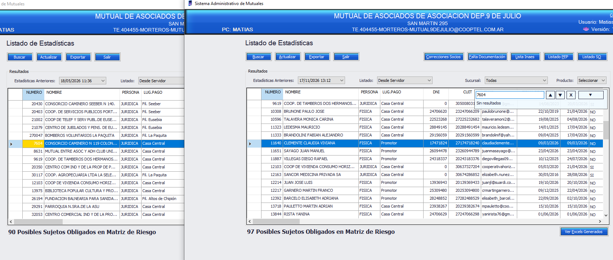
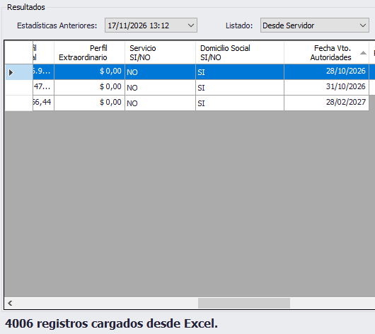
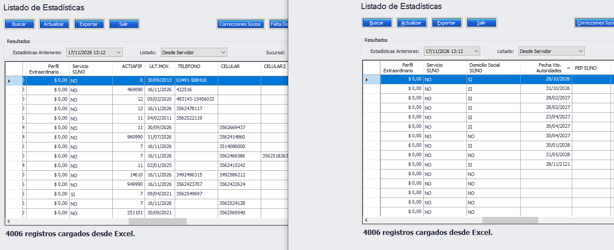
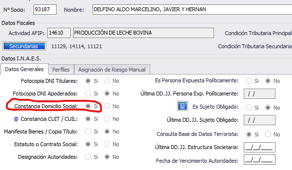
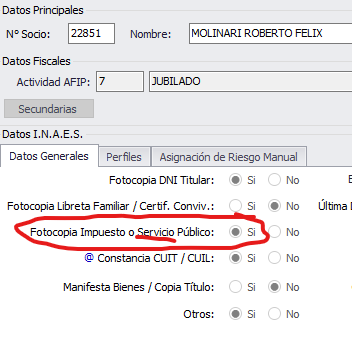
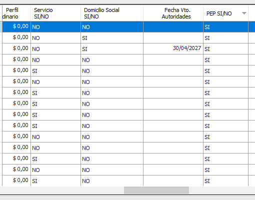

Click para Obtener Posibles S.O. ahora también obtiene en las actividades secundarias de ARCA para obtener todos los socios, como lo hacía en el contador.
Posibles sujetos obligados no debe incluir las personas jurídicas con forma jurídica: "FUNDACIONES Y ASOCIACIONES CIVILES"
ANTES (buscaba 90 de 119) / DESPUES (97/97)

Agregadas columnas de Domicilio Social y de Fecha de Vencimiento de Autoridades a Lista INAES

Antes/después:

Domicilio Social SI/NO: Específico para personas jurídicas, de este campo:

Servicio SI/NO: en cambio es su contraparte solo para las personas físicas:

PEP SI/NO: mover al lado de las otras propiedades de inaes01 para organizar mejor

Agregar color de fondo en propiedades que vienen de Inaes01 para diferenciarlas más rápido por grupos.